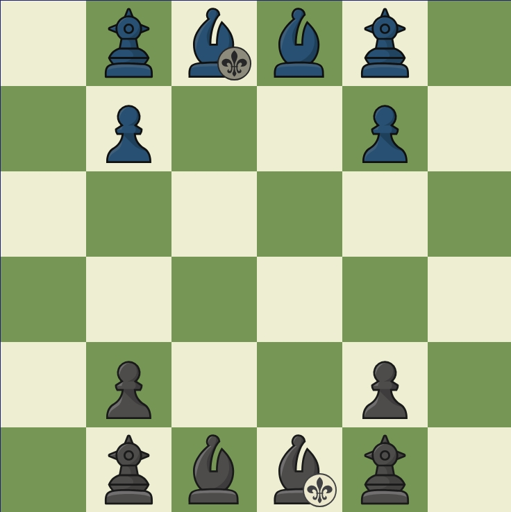

벼룩파리과의 생태와 기타 설정에서 따온 변형 체스류 게임
·기물:
구더기(maggot,M)(이미지서 폰,폰 포지션,간이 게임 시 구슬 1개로 대체)x2
번데기(pupa,P)(이미지서 페르즈,마이너 피스 포지션,구슬 2개로 대체)x2
암컷 (성체)(female fly,F)(이미지서 비숍,퀸 포지션,구슬 4개로 대체)x1
수컷 (성체)(male fly,M)(이미지서 문양이 붙은 비숍.킹 포지션,구슬 5개로 대체)x1
어린 수컷(성체)(young male fly,Y)(시작할떄 없음)(암컷과 같은 이미지,프로모션한 폰 포지션이고 수컷,암컷과 완전히 다른 기물,구슬 3개로 대체)x4~
·기물 행마:
구더기:직선으로 1번에 1칸 이동/공격,뒤로 이동 불가하며 끝에 다다를 시 거꾸로 행마를 지속하며 9턴 후 번데기화,잡으면 +1
번데기:대각선으로 1칸을 이동/공격,컬러바운드 기물,7턴 후 어린 수컷화,컬러바운드며 체스의 페르즈와 행마가 동일,잡으면 +2
암컷:대각선으로 1칸 또는 2칸을 이동/공격,또한 가장자리 칸에 다다를 시 앞/뒤로 1칸 이동 가능한 특수 행마와 아군 수컷과 2턴 초과 움직이지 않고 붙어 있을 시 임신 상태로 변하는 특수행마가 있으며,이때 행마는 똑같으나 이후 자신의 공격가능 위치에 적 기물이 있을시 공격 대신 기생 특수행마를 발동(적군 수컷 제외,적 수컷은 잡을수 있으며 잡으면 게임이 끝남),2턴 이후 언제든지 턴을 소모하지 않고 적 기물의 자리에 구더기 하나를 소환 가능(이는 규정상 해당 자리의 기물을 구더기가 잡은걸로 표시),컬러바운드 아니며 알필+페르즈+와지르의 행마와 동일,특수행마 O,잡으면 +4
수컷:대각선으로 원하는대로 이동,,또한 가장자리 칸에 다다를 시 앞/뒤로 1칸 이동 가능한 특수 행마가 있음,컬러바운드 아니며 비숍과 같은 행마,특수행마 O,잡으면 게임이 끝나나 이론상 +5
어린 수컷:대각선으로 2칸을 뛰어넘어 이동/공격,암컷에게 임신 불가,특수행마로 암수 근처 3x3칸에 있으면 '무리 효과'가 발동,해당 3x3칸 에서 자신의 색과 다른 주변 2칸을 이동 가능,알필과 같은 행마,특수행마 O, 잡으면 +5
·룰:청/람(B(blue)&N(navy))으로 나뉨,람이 선공이며 상대 수컷을 무슨 기물이든지 잡거나 자신의 기물이 2개 이상인 상태서 상대의 남는 기물이 수컷 제외 없게 하면 승리하며 무승부는 없음,4턴에 1번 자신의 턴을 쉬고 넘길수 있으며 이러면 상대는 해당 4턴 동안 쉴수 없음,한 턴은 람->청 순으로 한번씩 기물을 움직이는걸 뜻함,시작후 5수까지가 성장,이후 기물이 양팀 기물이 둘다 수컷+n 일때까지가 우화,그 이후는 번식기로 표
·기보:(청의 입장)가장 앞에 있는 가로 칸이 a,그 이후 b,c,d,e,f로 나뉘며 세로론 왼쪽부터 1, 이후 2,3,4,5,6으로 나뉘고 표기는 각 기물의 영어 첫단어를 따 표기,특수히 들어가는건 모두 기물 이름 첫글자와 이동한 칸 사이에 기호를 넣음,그 종류론 특수행마는 @를 기보 앞에 넣고 기물을 잡으면 x,이것이 이 경기 마지막 수면 ),암컷이 알을 낳으면 *,번데기로 우화하거나 어린 수컷으로 우화 시 =를 표기,
람의 행마를 단독으로 표기 시 5.Yb4 식으로,청은 5..Mxc4 식으로 표기
ex=Mxc2(구더기가 c2로 이동하며 그 자리에 있던 기물을 잡음),7..F*f4(7턴에 청이 암컷이 f4에 있던 기물에게 알을 기생시킴),Mxc5) (수컷이 c5에 있던 기물을 잡고 게임이 끝남,이로서 잡힌 기물이 수컷이란 걸 알수 있음)
·간이 게임 배치:
준비물:7mm 이하의 비즈(모래 등 큰 알갱이도 가능)40개 이상(기물배치에 필요한 30개 +우화 시 필요한 잔여 비즈),5cm 정도의 종이/판(격자가 있는것,없다면 그것에 선을 그을 필기구 1개)
·'기생파리' 일반적으론 페르즈의 행마를 가지나 기물점수 2점 이상 9점 이하인 적 기물이 공격범위에 들어올 시 기생,그 기물을 자신이 조종(행마법 사용)할수 있으며 기생 상태선 한번 잡아도 그 행마법(숙주)만 사라질 뿐 기생파리 자체는 기물의 공격 방향으로 1칸 멀어져 그 자리에 기물이 있을시 다시 기생,가장자리의 경우 숙주와 같이 잡힘) 생존
·'파리(떼)':기본적으로 0.5칸을 차지,처음엔 아군 마이너 피스 아무와 같은 칸에 배치 가능하며 페르즈의 행마를 가짐,해당 칸에 적/아군 기물이 들어올수 있으며 기본적으로 다른 기물이 잡거나 잡힐수 없으나 한 적군 기물이(아군은 x) 해당 칸에 2턴 이상 머무를 경우 '소화액' 효과가 발동,해당 기물은 죽음
·체스 변형기물 '(Megapropodiphora)arnoldi':파리와 동일하나 적용 시간이 2턴 초과
·'Rosary Recluse(Royal Rosary/Rosary)':비숍류의 컬러바운드 기물로 '0.5칸 차지 기물'에 속해 다른 아군 기물과 겹쳐 존재가 가능하며(이 상태서 잡힐시 겹친 기물과 함께 사망) 페르즈처럼 움직임
·(전체 내용물을 주머니에 넣을 수 있는 1인 마이크로 보드게임)
·내용물:벼룩파리 모형 2개(구별은 없으나 암/수를 표시하는게 좋음),개미 모형 1개,2단계 삼각형 프랙탈 판 1개
·간이 모형:비즈 4개(파리 암수 각각 1,개미 2로 표시)
·배치:중앙에 개미를 배치,판의 꼭짓점 3곳 중 원하는 2곳에 벼룩파리를 배치
·규칙: 검은 삼각형은 웅덩이, 흰 삼각형은 땅이 명칭이며 반시계 방향으로 1/2/3번 땅이라 표기.개미는 백색 중앙 삼각형(돌)에 머물며 1-2-3-2-3-1-3-2-1(반복)순으로 공격.파리는 검은 칸 또는 작은 흰 칸에 머물수 있으며 꼭짓점이 맞닿는 곳으로 이동 가능.파리가 웅덩이에 2턴 동안 있으면 익사하고,개미의 공격과 암수의 움직임 1번은 1턴.암수는 같은 삼각형에 위치할 수 있고,작은 흰 삼각형에 겹쳐 2턴 머무르면 암컷이 임신 상태로 변함.이때 암컷은 개미의 공격을 피해 알을 낳아야 하며,개미가 2턴 안에 이 알에 닿으면 기생이 되어(승리) 게임이 종료,그렇지 않으면 패배